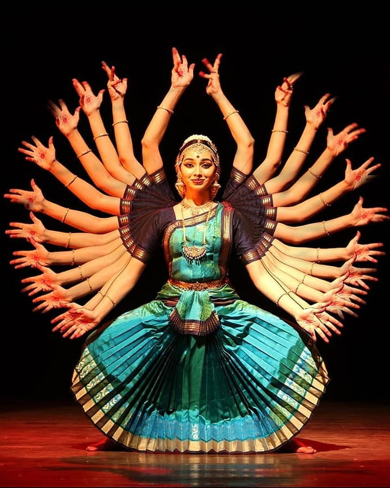

KUCHIPUDI

Unlike the other styles mentioned, kuchipudi requires talent in both dancing and singing. This dance, from the state of Andhra Pradesh in southeastern India, is highly ritualized, with a formalized song-and-dance introduction, sprinkling of holy water, and burning of incense, along with invocations of goddesses. Traditionally the dance was performed by men, even the female roles, although now it is predominantly performed by women.